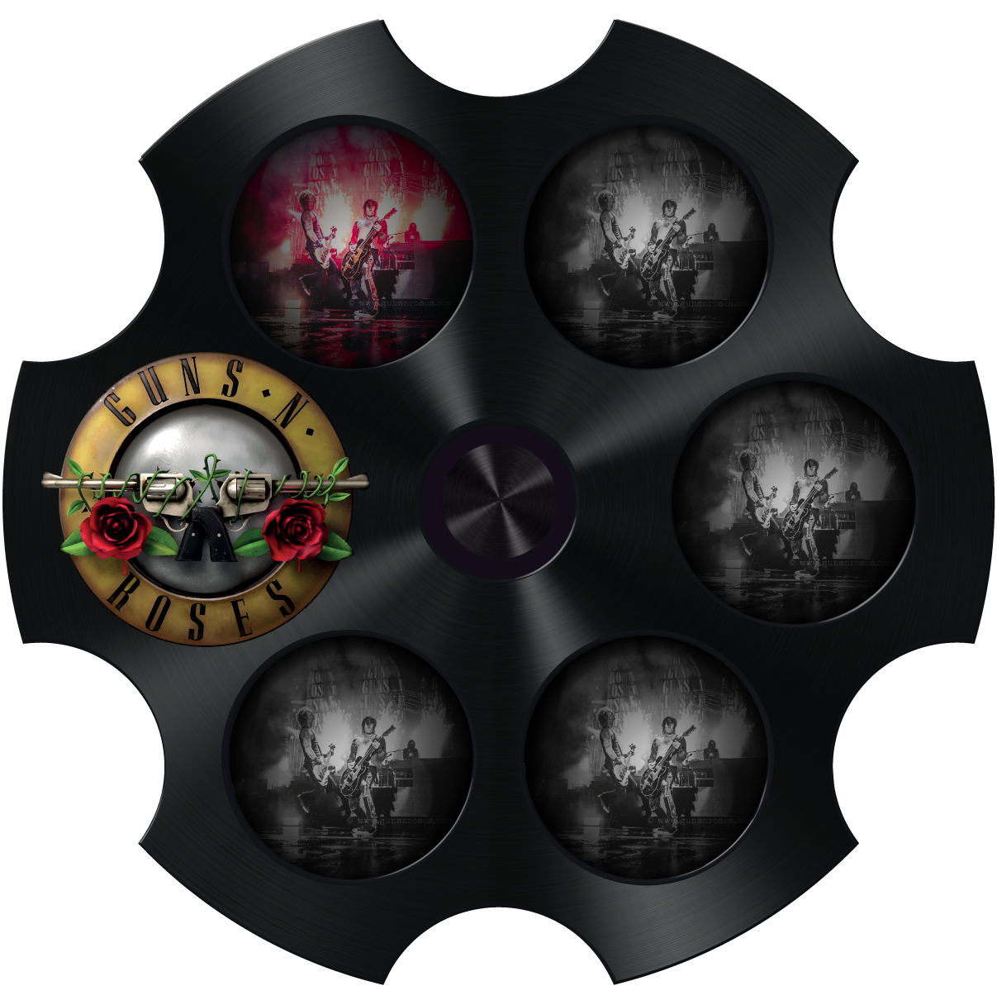

<!DOCTYPE html>
<html lang="en">

<head>
  <meta charset="UTF-8">

  <title>Gradient 01</title>

  <link rel="stylesheet" href="../styles/gradient-01.css">

  <style>
    html, body {
      width: 100%;
      height: 100%;
      margin: 0px;
      border: 0;
      // overflow: hidden; /*  Disable scrollbars */
      display: block;  /* No floating content on sides */
    }
  </style>

  <script>

    // var htmlCanvas = document.getElementById("myCanvas");

    // var ctx = htmlCanvas.getContext("2d");

window.onload = function() {

    // var img = new Image();
    // img.src = 'images/brushed-metal.png';

    // var c = document.getElementById("myCanvas");
    // var ctx = c.getContext("2d");
    // var img = document.getElementById("scream");
    // ctx.drawImage(img, 0, 0, 800, 800);

    var htmlCanvas = document.getElementById("myCanvas");
    var context = htmlCanvas.getContext("2d");
    var img = document.getElementById("scream");
    context.drawImage(img, 0, 0, 500, 500);

        // htmlCanvas.width = 500;


     initialize();

     function initialize() {
        // Register an event listener to
        // call the resizeCanvas() function each time 
        // the window is resized.
        window.addEventListener('resize', resizeCanvas, false);
        
        // Draw canvas border for the first time.
        resizeCanvas();
      }

 function redraw() {
        context.strokeStyle = 'blue';
        context.lineWidth = '5';
        context.strokeRect(0, 0, window.innerWidth, window.innerHeight);

    context.drawImage(img, 0, 0, 1207, 1201);

      }
    
      // Runs each time the DOM window resize event fires.
      // Resets the canvas dimensions to match window,
      // then draws the new borders accordingly.
      function resizeCanvas() {
        htmlCanvas.width = window.innerWidth;
        htmlCanvas.height = window.innerHeight;
        redraw();
      }


}

 
</script>


  <script>
    (function() {
        // Obtain a reference to the canvas element
        // using its id.
        // var htmlCanvas = document.getElementById('myCanvas');
      
          // Obtain a graphics context on the
          // canvas element for drawing.
        // var context = htmlCanvas.getContext('2d');

        // var img = document.getElementById("scream");
        // ctx.drawImage(img, 0, 0, 800, 800);
 
      // Start listening to resize events and
      // draw canvas.
      // initialize();
 
      // function initialize() {
      //   // Register an event listener to
      //   // call the resizeCanvas() function each time 
      //   // the window is resized.
      //   window.addEventListener('resize', resizeCanvas, false);
        
      //   // Draw canvas border for the first time.
      //   resizeCanvas();
      // }
        
      // Display custom canvas.
      // In this case it's a blue, 5 pixel border that 
      // resizes along with the browser window.         
      // function redraw() {
      //   context.strokeStyle = 'blue';
      //   context.lineWidth = '5';
      //   context.strokeRect(0, 0, window.innerWidth, window.innerHeight);
      // }
    
      // Runs each time the DOM window resize event fires.
      // Resets the canvas dimensions to match window,
      // then draws the new borders accordingly.
      // function resizeCanvas() {
      //   htmlCanvas.width = window.innerWidth;
      //   htmlCanvas.height = window.innerHeight;
      //   redraw();
      // }
    
    })();
  </script>

</head>
<body>

<!--   

  <canvas id="myCanvas" style="position: absolute; left: 0px; top: 0px; border:1px solid PaleVioletRed;">
  Your browser does not support the HTML5 canvas tag.
  </canvas> -->


  <div class="targetImgage">
  </div>

 <!-- <div class="box"></div> -->

</body>
</html>
